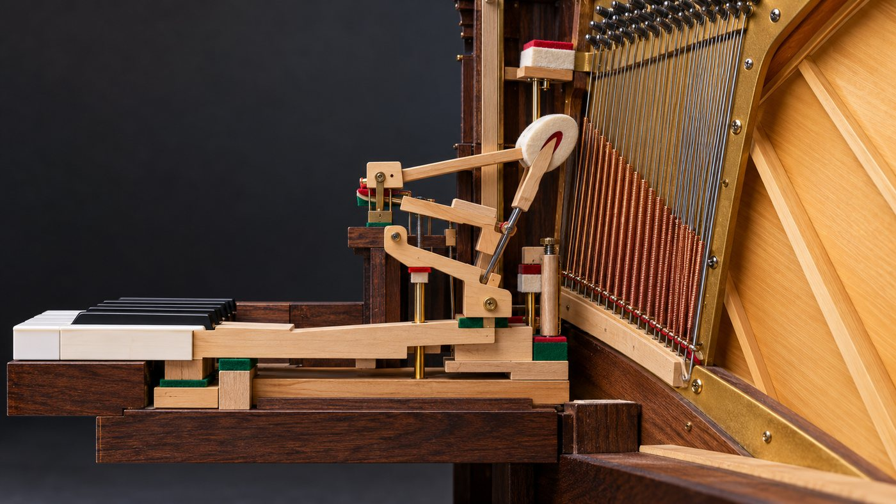
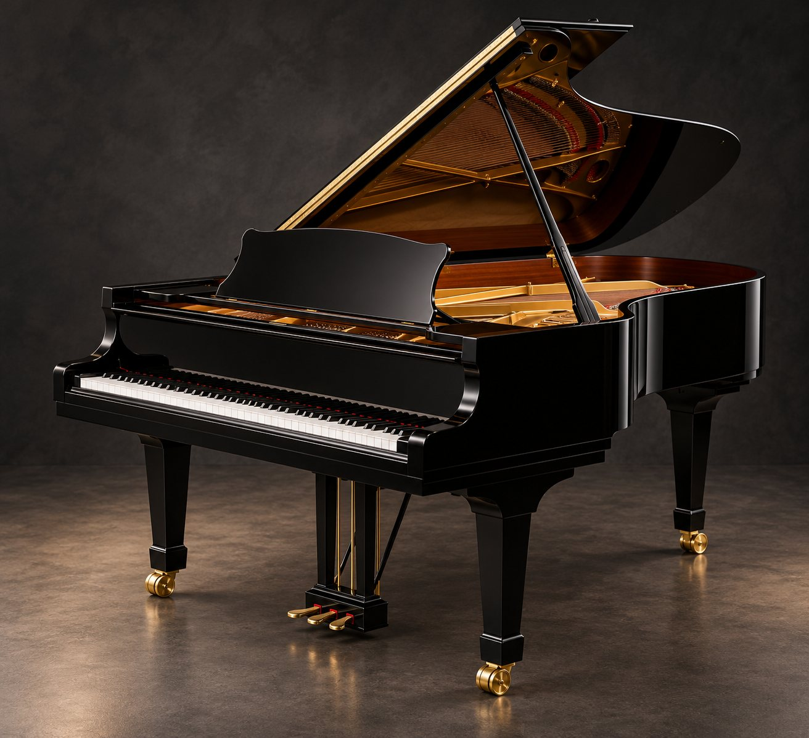
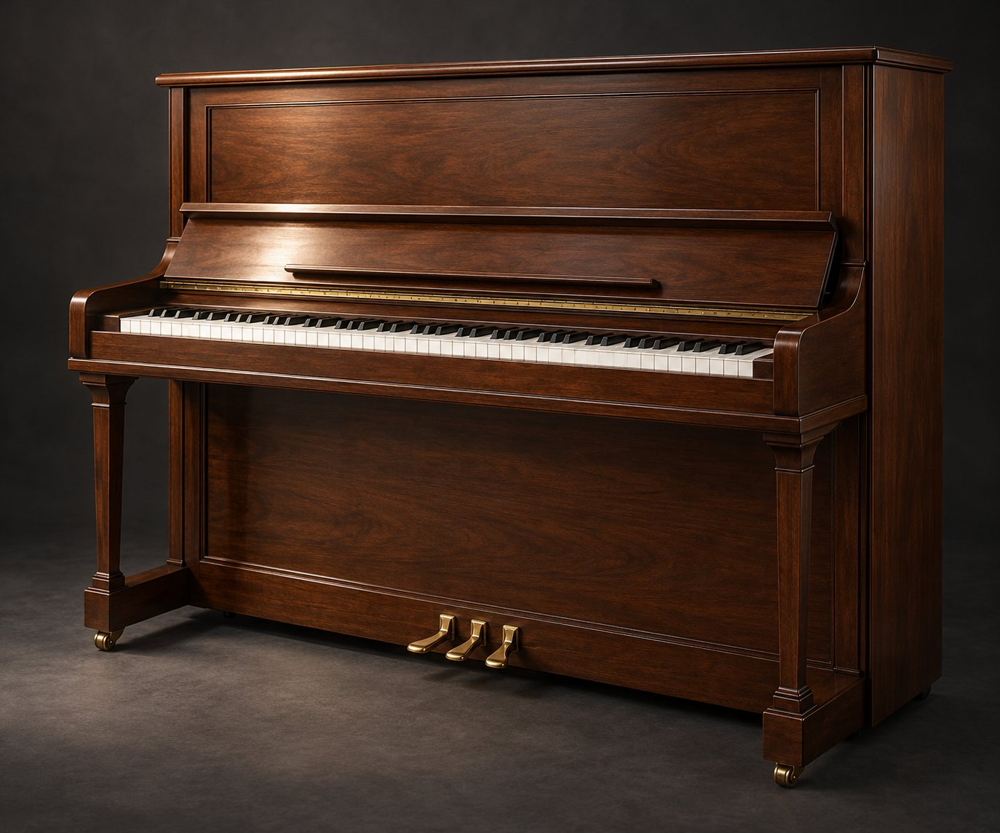
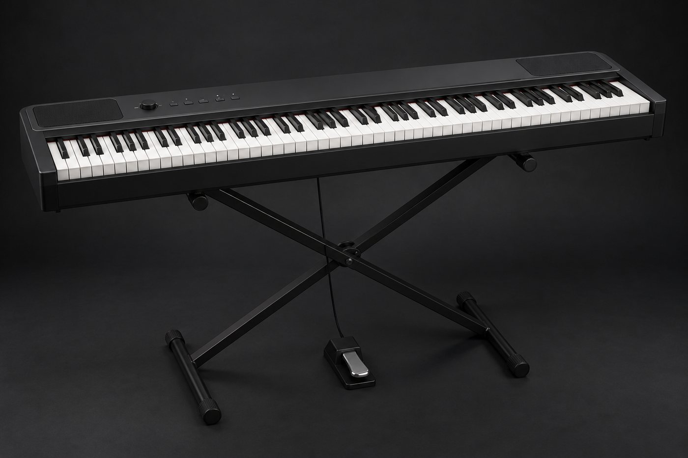
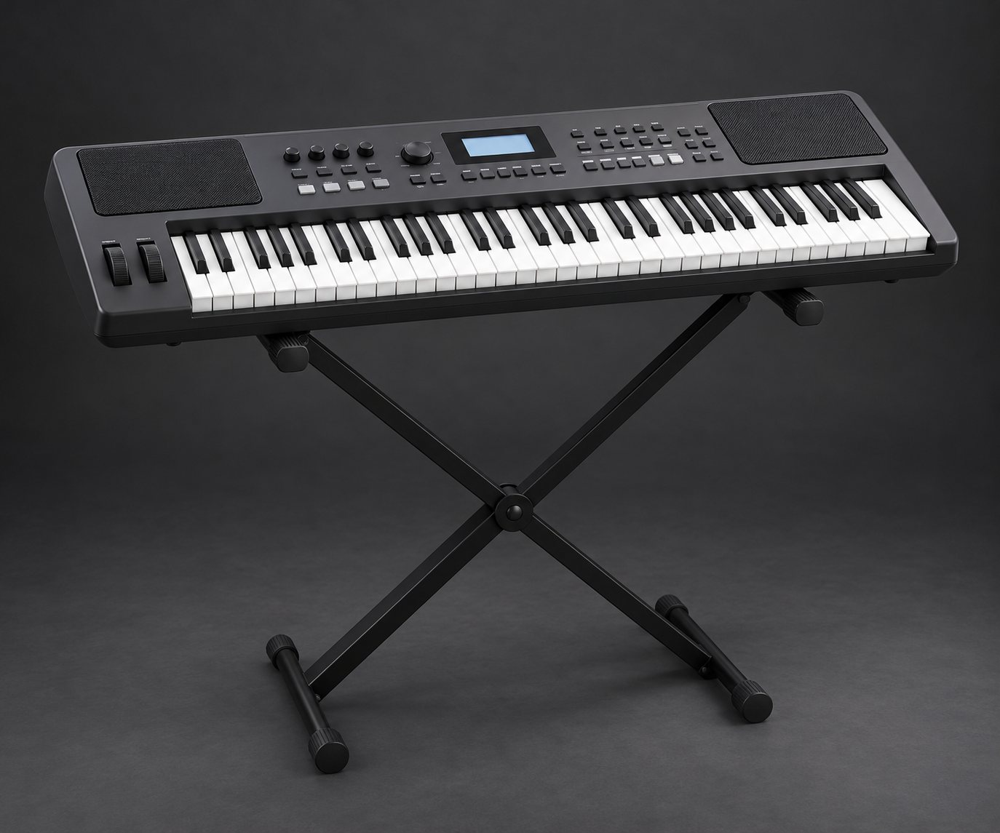
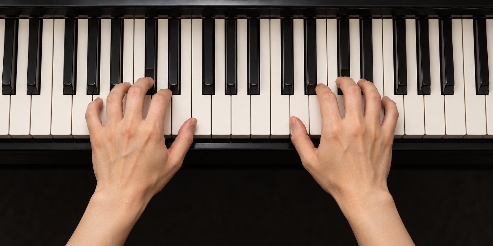

認識鋼琴與流行鋼琴
Meet The Piano · Pop Piano
主講：畫素音樂工作坊 李奕勳
musicallanding@gmail.com
今天的路線：認識你面前的八十八個琴鍵
- 能說明鋼琴的起源、發聲原理與常見的種類
- 能分辨古典鋼琴、流行鋼琴與爵士鋼琴的差異
- 以正確的坐姿與手形，認識雙手的手指編號與踏板
- 下課前，每個人在鍵盤上找到中央 C，用五指位置彈奏 Do Re Mi Fa Sol
許多人小時候都學過鋼琴，後來卻放下了
- 自我介紹：學琴的經驗、最想彈奏的一首歌
- 確認每個人使用的樂器：鋼琴、數位鋼琴或電子琴
- 流行鋼琴的目標：自彈自唱、自由伴奏，彈奏出屬於自己的樂曲
你學習鋼琴的經驗是？
六歲那年，我被鋼琴老師請回家
通過 YAMAHA 檢定十二級之後，
每次坐在鋼琴前，瞌睡蟲就爬上眼皮，
老師只好請一個對鋼琴沒有興趣的孩子回家。
十年後，吉他讓我重新認識樂理，
也讓我回到鋼琴前，開始近五年的自修。
這門課的起點
學琴的動力，來自想彈奏喜愛的音樂。這門課從和弦與伴奏出發，先讓你在鋼琴上自彈自唱，再一步一步加強音感與編曲的能力。
Pianoforte：能夠彈出「弱」與「強」的樂器
大鍵琴
Harpsichord，以撥弦發聲，音量無法隨著觸鍵改變。又稱撥弦古鋼琴、羽管鍵琴。
克里斯多佛利
義大利人克里斯多佛利以大鍵琴為原形，改用琴槌擊弦，製作出「具有強弱音變化」的古鋼琴。
Piano + Forte
全名 Pianoforte，意思是「弱強」。為了稱呼方便，省略代表強音的 Forte，只保留 Piano。
樂器之王
音域寬廣、能夠同時彈奏旋律與和聲，成為作曲與音樂教育最重要的樂器。
按下琴鍵，琴槌敲擊琴弦

- 原理上屬於擊弦樂器；必須透過鍵盤彈奏，所以歸類為鍵盤樂器
- 88 個琴鍵，音域從 A0 到 C8，超過七個八度，以十二平均律調音
- 內部有兩百多條琴弦，由鐵骨架承受琴弦的拉力
- 放開琴鍵，制音器立刻止住琴弦的振動
先預測，再揭曉
鋼琴的音源是？
- 琴槌
- 琴弦
- 踏板
- 琴鍵
鋼琴是結合了哪兩種樂器的原理？
- 簧片與管樂器
- 弦樂器與管樂器
- 鍵盤與管樂器
- 弦樂器與打擊樂器
從音樂廳到房間，鍵盤樂器的家族

平台鋼琴
琴弦水平排列，琴槌由下往上擊弦，觸鍵靈敏，音樂會的標準配備。

直立鋼琴
琴弦垂直排列，琴槌從前方擊弦，體積小，最常見於家庭與教室。

數位鋼琴
取樣真實鋼琴的音色，可以戴耳機練習、連接電腦使用 MIDI。

電子琴、合成器
49 到 88 鍵，內建大量音色與節奏，輕便、方便攜帶。
另外還有可以戴耳機練習的靜音鋼琴、自動演奏鋼琴，以及上下鍵盤加腳鍵盤的雙排鍵電子琴。初學練習，建議至少 61 鍵、具有琴鍵力度感應的樂器。
流行鋼琴，是爵士鋼琴的基礎
古典鋼琴
依照樂譜彈奏，右手旋律、左手伴奏都已寫好，重視技巧與詮釋。
流行鋼琴
看著和弦自由伴奏，加入裝飾音、插音，以「搶拍」「拖拍」的切分音彈出流行的味道。
爵士鋼琴
以即興演奏為主，使用七和弦與低音行進，一首歌彈奏一百次，每次都不一樣。
| 三要素 | 流行鋼琴 | 爵士鋼琴 |
|---|---|---|
| 和聲 | 較為協和的三和弦 | 不協和的七和弦 |
| 旋律 | 依照原曲加入裝飾音、切分音 | 即興變奏 |
| 節奏 | 各國舞曲的律動 | 低音行進 |
聆聽四段鋼琴，猜猜屬於哪一種風格
〈水邊的阿第麗娜〉與〈不能說的秘密〉屬於流行鋼琴：旋律清楚，伴奏以分散和弦為主。Bill Evans 與 Oscar Peterson 屬於爵士鋼琴：和聲豐富，旋律一再即興變奏。
休息十分鐘，甩甩手腕，放鬆肩膀
坐穩、放鬆，手指像握住一顆球
- 坐在椅子的前半部，身體對準中央 C，雙腳平放地面
- 椅子高度：手肘與琴鍵大約在同一個平面
- 肩膀放鬆，上臂自然下垂，手腕不塌也不翹
- 手指彎曲成圓弧，用指尖觸鍵；拇指用側邊
檢查口訣
肩鬆、肘平、腕直、指圓
彈奏時覺得肩膀或手腕緊繃，就停下來甩手，重新擺好手形。速度慢沒有關係，彈奏時最需要避免的是緊繃。
拇指是 1，小指是 5，左右手都一樣

本課程的伴奏譜寫成「L5 L3 L2 L1」「R1 R2 R5」：L 是左手、R 是右手，數字是手指編號。
三個踏板，各有任務
延音踏板
踩下時制音器離開琴弦，放開琴鍵之後聲音仍繼續延長。流行鋼琴最常使用，換和弦時要換踏板。
弱音踏板
讓聲音較弱、較柔和。平台鋼琴會讓琴槌位移，直立鋼琴讓琴槌靠近琴弦。
制音或靜音踏板
平台鋼琴只延長特定的音；直立鋼琴常作為弱音練習的靜音裝置。
和弦按下之後，立刻放開踏板再踩下，讓新和弦的聲音被延長，舊和弦的聲音被切掉。口訣：先彈、再換、後踩。
兩個黑鍵左邊的白鍵，就是 C
黑鍵兩個一組、三個一組重複出現。最靠近鋼琴中間的 C，稱為中央 C（C4）。標示淺藍色的鍵都是 C。
迷思還是事實？
C 五指位置：一根手指負責一個琴鍵
右手、左手各彈奏一次 Do Re Mi Fa Sol
① 右手 1 2 3 4 5
② 左手 5 4 3 2 1
重新聆聽時檢查：五個音的音量是否平均？手指是否保持圓弧？十二堂課之後，再與今天的錄音比較。
琴槌敲擊琴弦，響板放大聲音，
兩個黑鍵左邊就是 C，
拇指是 1，小指是 5。
離開教室前，寫下 3-2-1
回家之前
確認家裡的鋼琴或電子琴，找到中央 C；若還沒有樂器，先使用網站上的鍵盤練習。
每天 10 分鐘熱手課表
2 分鐘
3 分鐘
3 分鐘
2 分鐘
課後練習：完成一項，點選一次打勾
- 不看講義，說出鋼琴發聲的路徑：琴鍵、琴槌、琴弦、響板
- 閉上眼睛，用觸覺找到兩個黑鍵一組的位置，再彈出 C
- 右手與左手的 C 五指位置，各彈奏十次，五個音的音量平均
- 聆聽一首鋼琴伴奏的流行歌曲，判斷它比較接近流行還是爵士
- 填寫第二堂課前問卷
第二堂 基礎樂理與識譜
音名、唱名與簡譜，大譜表與中央 C，
音符的長短、拍號與音程，
學會閱讀樂譜，在鍵盤上找到每一個音。
掃描 Qr Code，直接在網站上填寫第二堂的課前問卷。